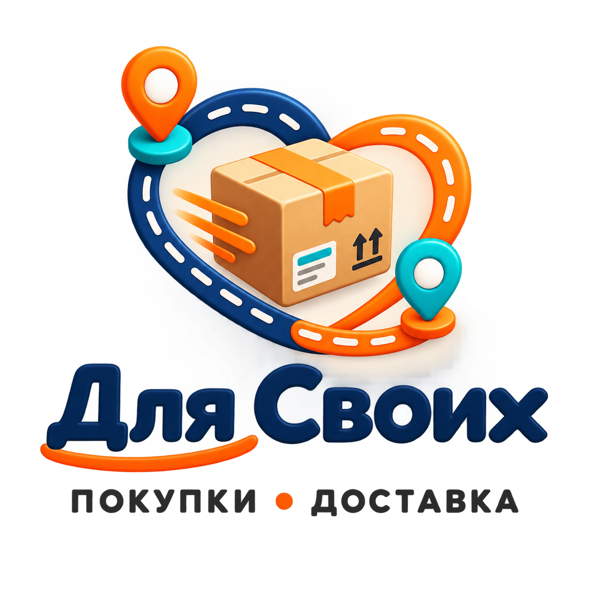

Вы выбираете товар
Пришлите ссылку, фотографию или описание того, что хотите заказать из Китая.
Совместная закупка · Ростов-на-Дону · вся Россия
Объединяем покупки в одну общую закупку: вы выбираете товар, а я помогаю найти выгодное предложение, рассчитать итоговую стоимость, выполнить выкуп и организовать доставку. Чтобы заказать из Китая, отправьте ссылку или фотографию товара в Telegram либо ВК.

Покупаем вместе
Участники выбирают товары и присоединяются к общей закупке. Вы отправляете ссылку или фотографию, а я помогаю проверить предложение, рассчитать заказ, выполнить выкуп и организовать доставку товаров из Китая в Россию.
Пришлите ссылку, фотографию или описание того, что хотите заказать из Китая.
Проверяю предложение и индивидуально рассчитываю стоимость выкупа и доставки.
После согласования товар добавляется в совместный заказ и выполняется выкуп.
Заказ прибывает в Ростов-на-Дону или отправляется в другой регион России.
Простой порядок действий
Вам не требуется самостоятельно разбираться с оплатой на китайской площадке и международной отправкой. Подготовьте ссылку или фотографию товара и присоединитесь к закупке через Telegram либо ВК.
Пришлите ссылку, фотографию или описание в Telegram либо ВК.
Узнайте итоговую стоимость выкупа и доставки до оформления заказа.
Подтвердите товар и условия, после чего я организую выкуп.
Ориентировочный срок доставки — 18–31 день, в зависимости от закупки.
Площадки Китая
Китайские маркетплейсы предлагают большой выбор, но оформление, оплата и доставка в Россию могут требовать помощи. В совместной покупке я выступаю организатором: помогаю с заказом, выкупом и доставкой из Китая.
Для заказа с Pinduoduo, 1688, Poizon, Taobao или другой доступной площадки отправьте найденное предложение. Возможность выкупа и условия уточняются до добавления товара в закупку.
Популярные китайские площадки
У каждой площадки свои правила, продавцы и способы оплаты. Перед выкупом я проверяю возможность заказа по вашей ссылке и сообщаю условия. Если прямой доставки в Россию нет, товар можно включить в совместную закупку.
Пришлите ссылку или снимок товара. Я уточню возможность выкупа, цену и условия доставки с Pinduoduo в Россию.
Помогу рассчитать выкуп товара с 1688 и добавить его в общий заказ после согласования стоимости.
Проверим выбранное предложение и рассчитаем заказ с Poizon вместе с доставкой до вашего города.
Отправьте найденный товар, чтобы узнать условия выкупа с Taobao и ориентировочный срок доставки.
Проверяем выгоду до заказа
Перед совместной покупкой можно сравнить итоговую стоимость товара из Китая с предложениями на Ozon и Wildberries. Для честного сравнения учитываются цена товара, количество, характеристики, комиссия и доставка.
Если товар из Китая действительно дешевле, вы увидите разницу до выкупа. Если выгоды нет, мы не будем показывать вымышленную экономию.
Без приблизительных обещаний
Итоговая цена зависит от стоимости товара, веса, объёма, условий продавца и маршрута. Поэтому расчёт совместной покупки и доставки из Китая выполняется индивидуально. До выкупа вы получите информацию по стоимости и ориентировочным срокам.
Ответы перед заказом
Несколько покупателей передают товары для общей закупки, а организатор помогает с расчётом, выкупом и доставкой. Каждый участник заранее согласует свой заказ.
Отправьте ссылку или фотографию товара в Telegram либо ВК. Я проверю предложение, подготовлю индивидуальный расчёт и добавлю товар в совместный заказ после согласования.
Товар можно найти на Pinduoduo, 1688, Poizon, Taobao или другой китайской площадке. Пришлите предложение, чтобы уточнить возможность выкупа и доставки.
Если площадка не принимает российскую оплату или не отправляет товар в Россию, заказ можно оформить через организатора совместной закупки.
Передайте ссылку на предложение. Возможность выкупа, итоговая стоимость и условия доставки уточняются до оформления заказа.
Помощь байера полезна, когда требуется проверить предложение, выполнить оплату на китайской площадке, организовать выкуп и доставку товара в Россию.
Проверяются доступные сведения в предложении и согласованные параметры. Возможность дополнительной проверки или фотографии уточняется для конкретного заказа.
Стоимость зависит от товара, веса, объёма, маршрута и города получения. Итоговый расчёт выполняется индивидуально до выкупа.
Ориентировочный срок составляет 18–31 день. Фактический срок зависит от конкретного заказа и маршрута.
Расчёт выполняется в Telegram или ВК после получения ссылки, фотографии или описания товара.
Да, доставка доступна в Ростов-на-Дону и другие регионы России. Укажите город при обращении.

Присоединиться к закупке
Отправьте ссылку или фотографию в Telegram либо ВК. Я рассчитаю стоимость выкупа и доставки.